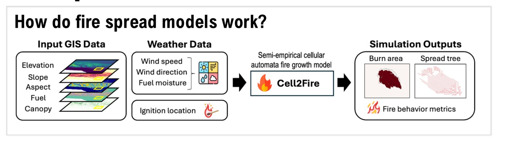
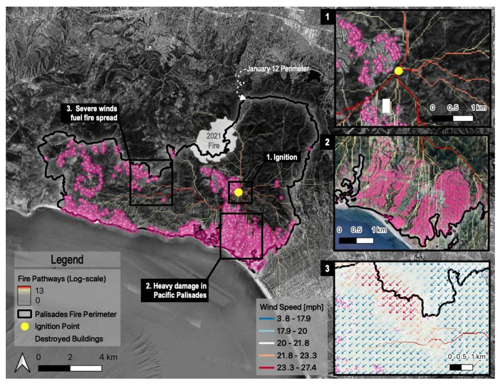

Computational Modeling
Overview
A simulation earns its keep only if you can trust it. Fire spread models are widely used to anticipate what a fire will do, but they frequently fail to reproduce real outcomes, which makes them hard to act on. This area is about closing that gap: calibrating a physics-based growth model against observed perimeters, quantifying what remains uncertain, and coupling it to the drivers that actually govern behavior — high-resolution wind, urban fuels, and the fire-weather regime that determines what kind of event to expect in the first place. The same logic runs across scales — a single burn scar, a landscape, a global fire regime — and extends to hazards that compound: with Caltrans I built a multi-criteria framework that turns basin, soil, terrain, and flowline data into post-fire debris flow risk estimates for state infrastructure. In every case the output is not a picture of a hazard but an input to a decision. How the resulting consequences then propagate through communities and infrastructure is taken up on the Disaster Resilience page.
My Work
Fire Spread Simulation & Uncertainty
Fire spread models (FSMs) simulate how a fire will propagate across a landscape, information that's critical for anticipating risk and planning proactively. I benchmarked and optimized Cell2Fire, a cellular-automata FSM based on semi-empirical fire physics, across synthetic and real landscapes in the US, Canada, and Chile, the first application of the model to US terrain. I developed a multi-objective optimization method that scales the simulated fire's elliptical shape to better match observed rates of spread, and used blackbox optimization to fine-tune the simulation against a real burn scar, improving prediction accuracy (F1-score from 0.74 to 0.83) while running an order of magnitude faster than benchmark simulators like FARSITE and Prometheus. To evaluate model uncertainty and sensitivity more broadly, I used a machine-learning-based surrogate model to assess robustness and feature importance through explainable AI methods.

Fire spread models often assume constant wind speed and direction, which misses the spatiotemporal complexity that actually drives fire behavior. I coupled Cell2Fire with WindNinja, a physics-based solver that downscales weather-model wind fields to high resolution while conserving mass and momentum, and evaluated the approach on the 2025 Palisades Fire, simulating its rapid spread over the first 32 hours. Adding the momentum solver on top of a mass-only solver further reduced the model's tendency to overestimate burned area, producing fire spread that more closely tracked the fire's real, wind-driven path through Pacific Palisades.

Fire Weather & Changing Fire Regimes
Simulating a fire assumes we know roughly what kind of fire to expect. Increasingly we do not. I study how atmospheric drivers organize fire behavior at regional to global scales, and how those regimes shift when conditions leave the historical envelope. I am developing a dynamic global pyrome framework that classifies fire regimes by their fire weather structure rather than by static biome, and tracks how they move under extreme conditions; applied to China's fire record from 2001 to 2025, it reveals a consistent fire weather structure underlying sharply divergent regional regimes. I have also analyzed the March 2025 South Korean fires, an event that produced fire behavior with no regional precedent, to isolate the meteorological and fuel conditions that made it possible. This work draws on reanalysis products, satellite fire detections, and increasingly the output of AI weather models. I am extending it toward operational forecasting with the Catalan Fire Service, using self-supervised deep learning to answer a simple, useful question: what is today's fire weather forecast most similar to, and what did that day's fire behavior look like?
Related Publications
Every publication tagged to this research area, most recent first. The full, filterable list lives on the Research page.